1947-1961 - The beginning

1961 - The great walkout
This shakeup, and Forghieri's engineering talent, made the 1960s even more successful for Ferrari than the previous decade. The mid-engined Dino racers laid the foundation for Forghieri's dominant 250-powered 250 P. On the street, the Dino road cars sold strongly, and legendary models like the 275 and Daytona were on the way.


1963-1967 - The US rivals

